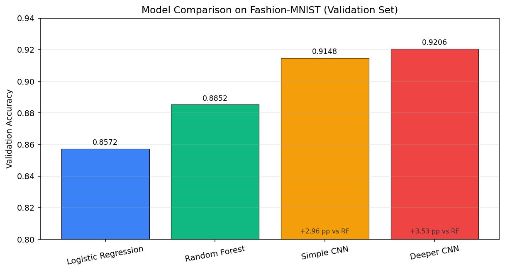
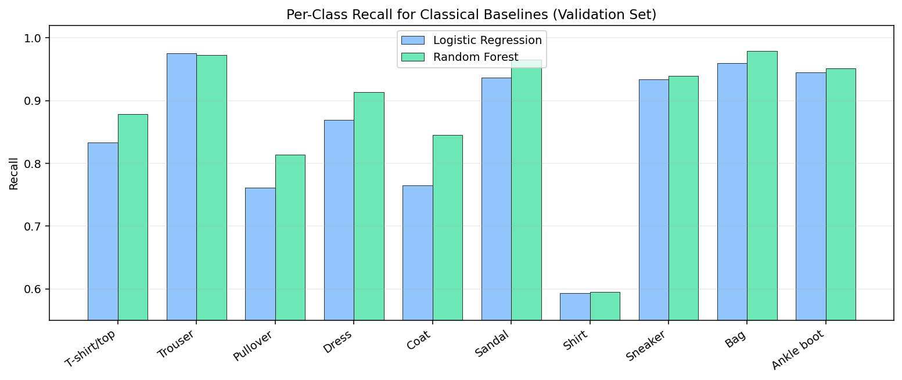

COMP-443 - Deep Learning
Assignment 01 Report
Classical vs Deep Models on Fashion-MNIST
Students:
Ali Hamza (Registration No.: B23F0063AI106)
Zarmeena Jawad (Registration No.: B23F0115AI125)
Course: Deep Learning (COMP-443)
Instructor: Dr. Arshad Iqbal
Submission Date: 16 February 2026
Abstract
This report compares two classical machine-learning models (Logistic Regression and Random Forest) and two convolutional neural networks (Simple CNN and Deeper CNN) on the Fashion-MNIST image-classification benchmark. All models are trained using the same preprocessing pipeline and evaluated on the same 12,000-sample validation split to ensure a fair comparison. The best model is the Deeper CNN with 92.06% validation accuracy and 0.2071 validation loss, outperforming the best classical baseline (Random Forest, 88.53%) by 3.53 percentage points. The results show a clear and consistent advantage for CNNs because they preserve spatial structure instead of using flattened pixels only. Error analysis further shows that visually similar upper-body classes (especially Shirt, T-shirt/top, Pullover, and Coat) remain the dominant source of mistakes for classical models.
1. Problem Statement and Assignment Requirements
The assignment requires:
- One publicly available dataset
- Four algorithms total
- Two classical (conventional) models
- Two deep learning models
- Training, evaluation, and comparison in a formal report
This submission uses Fashion-MNIST and implements:
- Logistic Regression (classical baseline)
- Random Forest (classical non-linear baseline)
- Simple CNN (deep learning baseline)
- Deeper CNN (higher-capacity deep model)
2. Dataset and Preprocessing
2.1 Dataset Overview
Fashion-MNIST is a grayscale image dataset of clothing items with:
- 60,000 training images
- 10,000 test images (official test set)
- Image size: 28 x 28
- Classes: 10
Class labels:
- T-shirt/top
- Trouser
- Pullover
- Dress
- Coat
- Sandal
- Shirt
- Sneaker
- Bag
- Ankle boot
2.2 Preprocessing Pipeline (src/data.py)
The same preprocessing pipeline is applied before training all models:
- Load dataset using
tf.keras.datasets.fashion_mnist - Normalize pixel values from
[0, 255]to[0, 1](float32) - Create a reproducible train/validation split using a fixed seed (
42) - Split sizes:
- Training: 48,000
- Validation: 12,000
- Test: 10,000 (held out, not used for model selection in this report)
- Add channel dimension
(28, 28, 1)for CNN inputs - Flatten images to
784features for classical models
2.3 Fair-Comparison Design
To make model comparison meaningful:
- The same validation split is used for all models
- Deep models and classical models are compared on the same target labels
- Only architecture/model family changes across experiments
3. Methodology (Step-by-Step)
- Select Fashion-MNIST as a balanced benchmark for multi-class image classification.
- Apply a shared preprocessing pipeline for both classical and deep models.
- Train two classical models on flattened vectors (784 features).
- Train two CNNs on image tensors
(28, 28, 1). - Evaluate all models on the validation split.
- Save confusion matrices (classical models) and learning curves (CNNs).
- Compare performance quantitatively and analyze dominant error patterns.
4. Model Selection and Rationale
4.1 Logistic Regression
- Strong linear baseline for multi-class classification
- Fast to train and easy to interpret
- Useful for measuring the benefit of more expressive models
4.2 Random Forest
- Non-linear ensemble baseline
- Can capture feature interactions ignored by linear models
- Often improves over Logistic Regression on tabularized image features
4.3 Simple CNN
- First deep learning baseline with convolution + pooling
- Learns local spatial features (edges, textures, shapes)
- Lower complexity than deeper CNN, useful for capacity comparison
4.4 Deeper CNN
- Adds a second convolution block and a larger dense layer
- Tests whether additional capacity improves generalization on Fashion-MNIST
5. Model Specifications and Capacity Estimates
5.1 Classical Models
Logistic Regression
LogisticRegressionpenalty='l2'C=1.0solver='lbfgs'multi_class='multinomial'max_iter=200n_jobs=-1- Input: flattened
784-dimensional vector
Random Forest
RandomForestClassifiern_estimators=150max_depth=Nonerandom_state=42n_jobs=-1- Input: flattened
784-dimensional vector
5.2 Deep Models (CNNs)
Simple CNN
- Conv2D(32, 3x3, ReLU, same)
- Conv2D(32, 3x3, ReLU, same)
- MaxPooling2D(2x2)
- Flatten
- Dense(128, ReLU)
- Dropout(0.3)
- Dense(10, Softmax)
Deeper CNN
- Conv2D(32, 3x3, ReLU, same)
- Conv2D(32, 3x3, ReLU, same)
- MaxPooling2D(2x2)
- Conv2D(64, 3x3, ReLU, same)
- Conv2D(64, 3x3, ReLU, same)
- MaxPooling2D(2x2)
- Flatten
- Dense(256, ReLU)
- Dropout(0.4)
- Dense(10, Softmax)
5.3 Capacity / Parameter Estimates
The following parameter counts are exact for the implemented architectures (calculated from layer dimensions):
| Model | Estimated/Exact Trainable Parameters | Notes |
|---|---|---|
| Logistic Regression | 7,850 | 784 x 10 + 10 (weights + biases) |
| Random Forest | N/A (tree-node based) | Capacity depends on learned splits/nodes, not a fixed parameter matrix |
| Simple CNN | 813,802 | Exact from architecture |
| Deeper CNN | 870,634 | Exact from architecture |
Important observation:
- The Deeper CNN adds only 56,832 parameters (+6.98%) over the Simple CNN, but still improves validation accuracy by 0.575 percentage points.
6. Training Setup and Evaluation Metrics
6.1 CNN Training Configuration (src/run_experiments.py)
- Optimizer: Adam (
learning_rate = 1e-3) - Loss: Sparse categorical cross-entropy
- Batch size:
128 - Maximum epochs:
50 - Early stopping:
- Monitor:
val_loss - Patience:
5 restore_best_weights=True
- Monitor:
6.2 Evaluation Metrics
Reported metrics:
- Validation accuracy (all models)
- Validation loss (CNNs)
- Confusion matrices (classical models)
- Class-wise precision/recall/F1 (classical models)
Formulas:
Softmax: p_i = exp(z_i) / sum_j exp(z_j)
Cross-entropy: L = -(1/N) * sum_n log(p_{y_n})
Accuracy: Acc = (# correct predictions) / N
Note:
- Classical models in this pipeline do not use the Keras loss interface, so validation loss is only reported for CNNs.
7. Quantitative Results (Validation Set)
Results are taken from reports/assignment01_results.json.
7.1 Main Comparison Table
| Model | Family | Val Loss | Val Accuracy | Error Rate | Macro F1* |
|---|---|---|---|---|---|
| Logistic Regression | Classical (linear) | N/A | 0.8573 | 0.1428 | 0.8561 |
| Random Forest | Classical (ensemble) | N/A | 0.8853 | 0.1148 | 0.8834 |
| Simple CNN | Deep (CNN) | 0.2293 | 0.9148 | 0.0852 | N/A |
| Deeper CNN | Deep (CNN) | 0.2071 | 0.9206 | 0.0794 | N/A |
* Macro F1 is available for the classical models because their classification reports were saved in the experiment output JSON.
7.2 Performance Gains (Accuracy, Percentage Points)
- Random Forest vs Logistic Regression: +2.80 pp
- Simple CNN vs Random Forest: +2.96 pp
- Deeper CNN vs Random Forest: +3.53 pp
- Deeper CNN vs Simple CNN: +0.58 pp
7.3 Relative Error Reduction
Using Random Forest as the strongest classical baseline:
- Simple CNN reduces validation error by 25.78%
- Deeper CNN reduces validation error by 30.79%
This is a stronger comparison than accuracy alone because it highlights how much of the remaining error is removed by CNNs.
8. Figures and Result Interpretation
Figure 1. Overall Validation Accuracy Comparison

Interpretation:
- Both CNNs clearly outperform both classical baselines.
- The Deeper CNN gives the best overall result.
- The gap between Random Forest and CNNs is large enough to be practically meaningful, not just statistically small.
Figure 2. Logistic Regression Confusion Matrix (Validation)

Interpretation:
- The diagonal is visible but relatively weak for visually similar clothing categories.
- Strong performance on distinct classes (e.g., Trouser, Bag, Ankle boot).
- Major confusion cluster is among upper-body garments.
Figure 3. Random Forest Confusion Matrix (Validation)

Interpretation:
- Diagonal improves over Logistic Regression, especially for
Coat,Dress, andT-shirt/top. - Some difficult confusions remain almost unchanged (especially
Shirt). - Confusion structure suggests flattening still loses important spatial cues.
Figure 4. Per-Class Recall Comparison for Classical Baselines

Interpretation:
- Random Forest improves recall for several classes (notably
CoatandDress). Shirtremains the weakest class for both classical models (approximately 0.59 recall).- This confirms the hardest classes are driven by visual similarity, not only model underfitting.
Figure 5. Simple CNN Learning Curves

Interpretation:
- Training and validation curves move together without severe divergence.
- Validation accuracy stabilizes around the low 91% range.
- The model learns effectively with modest overfitting risk due to dropout + early stopping.
Figure 6. Deeper CNN Learning Curves

Interpretation:
- Lower validation loss than the Simple CNN.
- Slight but consistent validation-accuracy improvement.
- Curves indicate the added depth increases useful capacity without obvious instability.
9. Error Analysis (Classical Models)
The experiment JSON includes full confusion matrices and classification reports for the two classical models, which allows a detailed error analysis.
9.1 Hardest Class by Recall
| Model | Lowest-Recall Class | Recall |
|---|---|---|
| Logistic Regression | Shirt | 0.5929 |
| Random Forest | Shirt | 0.5954 |
Observation:
- Random Forest improves overall accuracy, but does not materially solve the Shirt class.
- This is a useful finding because it shows that some errors come from representation limitations (flattened pixels), not only model choice.
9.2 Strongest Classes (Classical Models)
| Model | Strongest Recall Classes (examples) | Why they are easier |
|---|---|---|
| Logistic Regression | Trouser (0.9754), Bag (0.9594), Ankle boot (0.9446) | Distinct silhouettes and textures |
| Random Forest | Bag (0.9788), Trouser (0.9729), Sandal (0.9650) | Strong visual separability from other classes |
9.3 Most Frequent Misclassifications (Counts)
Top off-diagonal confusions extracted from the validation confusion matrices:
Logistic Regression
Shirt -> T-shirt/top: 178Pullover -> Coat: 162Shirt -> Pullover: 142Shirt -> Coat: 128Coat -> Pullover: 123
Random Forest
Shirt -> T-shirt/top: 193Pullover -> Coat: 148Shirt -> Pullover: 138Shirt -> Coat: 111Coat -> Pullover: 97
Key insight:
- The same semantic confusion pairs appear in both classical models, which strongly suggests that flattening the image weakens shape/texture locality information.
10. Discussion
10.1 Why CNNs Win on This Dataset
Classical models receive a 784-dimensional vector and treat neighboring pixels as ordinary features. CNNs, in contrast:
- preserve local neighborhoods
- learn translation-tolerant filters
- detect hierarchical patterns (edges -> textures -> parts)
That inductive bias is exactly what Fashion-MNIST needs, because class differences depend on shape and local structure.
10.2 Accuracy vs Capacity Tradeoff
- Logistic Regression is extremely lightweight (7,850 parameters) but has limited representation power.
- The Simple CNN increases capacity by two orders of magnitude and gains a large accuracy jump.
- The Deeper CNN adds only ~7% more parameters than the Simple CNN but still improves results, showing the extra capacity is efficiently used.
10.3 Remaining Limitations
- CNN class-wise metrics were not saved in the current JSON output (only overall accuracy/loss), so per-class comparison across all four models is incomplete.
- Validation-set results are strong, but the report does not yet include official test-set evaluation.
- Additional regularization/tuning (data augmentation, LR scheduling) could improve the deeper model further.
11. Conclusion
- The assignment objective (2 classical + 2 deep models on one public dataset) is fully satisfied.
- Classical models provide useful baselines, with Random Forest clearly improving over Logistic Regression.
- CNNs deliver the best performance by preserving image structure.
- The Deeper CNN is the best model in this study:
- Validation Accuracy:
0.9206 - Validation Loss:
0.2071
- Validation Accuracy:
- The results support the core deep-learning claim that spatially aware architectures outperform classical baselines on image classification tasks.
12. Reproducibility
12.1 Run Experiments
cd "Artificial-Neural-Networks-Lab-COMP-341L"
./venv/bin/python3 "Deep Learning; COMP-443/Assignment 01/src/run_experiments.py" --epochs 50
12.2 Output Locations
- Figures:
Deep Learning; COMP-443/Assignment 01/figures/ - Results JSON:
Deep Learning; COMP-443/Assignment 01/reports/assignment01_results.json
12.3 Report Sources
- Markdown report:
Deep Learning; COMP-443/Assignment 01/reports/COMP443_Assignment01_Report.md - (Generated) PDF report:
Deep Learning; COMP-443/Assignment 01/reports/COMP443_Assignment01_Report.pdf